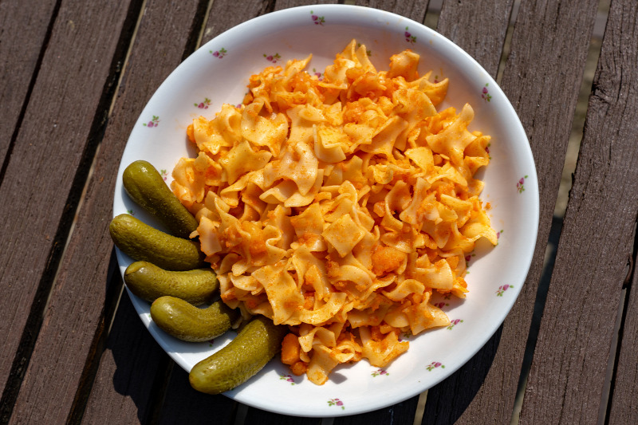

Krumplis Tészta

Leírás
Krumplis Tészta nagyon egyszerűen és gyorsan elkészíthető,tápláló és finom étel
Hozzvalók
- 1 fej Vöröshagyma
- 1 dl Olaj
- 1 tk Pirospaprika
- 50 dkg Krumpli
- 50 dkg Só
- 50 dkg Bors
- 50 dkg Tészta
Elkészítés
- A krumplis tészta elkészítéséhez egy nagyobb serpenyőben a felaprított vöröshagymát forró zsiradékban megpirítjuk,
majd a tűzről lehúzva meghintjük pirospaprikával.
- Hozzáadjuk a megpucolt, apró darabokra vágott burgonyát. Megsózzuk, megborsozzuk, és kb. 0,5 dl vizet öntünk rá, majd a saját levében, fedő alatt,
takarékon (néha megkevergetve) puhára pároljuk.
- Közben a tésztát bő, sós vízben, a csomagoláson látható utasítás szerint kifőzzük és leszűrjük. Amikor megpuhult a krumpli,
kissé összetörjük, és összekeverjük a kifőtt tésztával. Szükség szerint megsózzuk, megborsozzuk.
Vissza